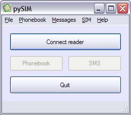

|
|
About
pySIM is SIM card management tool, capable of creating, editing, deleting, backup and restore operations on your SIM Phonebook and SMS records.
Requirements
pySIM requires the following:
- Windows 98 or later
- PC/SC software components installed (see my PC/SC web page for details)
- PC/SC compliant card reader
- GSM SIM card
Note: PC/SC software is configured as part of the Operating System on Windows 2000 and later. You may have to install it manually on Windows 98,ME and NT.
Source
pySIM source code is released under the GNU General Public License (GPL) and is available on SourceForge: pySim
Screenshot

|